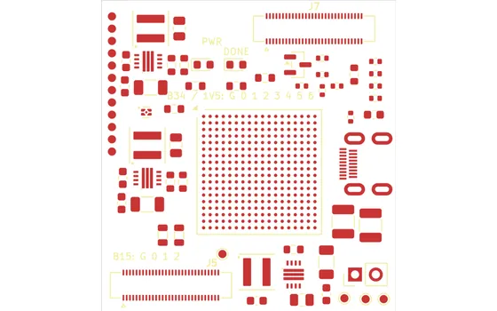
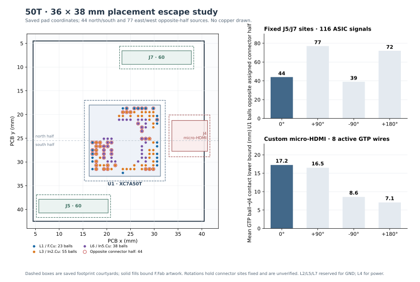

The 50T material below is an earlier review. See the selected 25T placement and its current three-cable interface.
Historical PCB checkpoint · 28 September 2026
Earlier 50T micro-HDMI board
This XC7A50T eight-layer review preserves the earlier headstage placement and per-board component candidates. The selected device is now XC7A25T-2CSG325I; open the current 25T board section ↗.
01 / Historical native design
Earlier 50T board
The viewer reads the 28 September KiCad PCB. Switch between copper layers and footprints, or open the 3D export. This is placement and connection evidence, not a routed board.

Historical 50T native PCBPlacement and connection review from 28 September. The board is unrouted.
Loads here when you open it.
Open to rotate the 28 September board export. This remains a historical review.
Loads here when you open it.

02 / Purchasing draft
Fitted parts to source
Quantities are per one 50T FPGA PCB. Rows group identical CAD values, manufacturer codes and footprints. A candidate code still needs engineering and stock checks; “TBD” means the exact ordering part is unresolved.
| Function | CAD part / value | Qty | References | Purchase status / engineering item | Part source |
|---|---|---|---|---|---|
| XC7A50T FPGA | XC7A50T-CSG325; speed/temperature grade TBDXC7A50T-CSG325 | 1 | U1 | Exact code TBDSelect and qualify the full speed and temperature suffix. | Source ↗ |
| GTP MGTAVCC regulator; GTP MGTAVTT regulator; power_asic; power_aux; power_core | TPS62135RGXRTPS62135RGXR | 5 | U2; U3; U4; U5; U7 | Candidate exact codeCheck the exact ordering suffix, supplier stock and electrical fit before purchase. | Source ↗ |
| Single-image configuration flash | MX25U3232FZBI02MX25U3232FZBI02 | 1 | U6 | Candidate exact codeCheck the exact ordering suffix, supplier stock and electrical fit before purchase. | Source ↗ |
| Configuration level translator | TXU0304RUTRTXU0304RUTR | 1 | U8 | Candidate exact codeCheck the exact ordering suffix, supplier stock and electrical fit before purchase. | Source ↗ |
| Configuration rail supervisor | TLV803EA17DPWRTLV803EA17DPWR | 1 | U9 | Candidate exact codeCheck the exact ordering suffix, supplier stock and electrical fit before purchase. | Source ↗ |
| Custom micro-HDMI cable interface | 467651001CUSTOM 12 V + JTAG + GTP | 1 | J4 | Electrical review pending12 V is selected for this custom cable, but the proposed R3 interposer has no implemented power path. Qualify the total load, cable/contact current, protection, return path and receiver before applying power. | Source ↗ |
| Two 60-contact ASIC mezzanine receptacles | DF40TC-60DS-0.4V(51)DF40TC-60DS-0.4V(51) | 2 | J5; J7 | Mechanical approval pendingTwo rigid DF40T pairs need spacing, alignment and mate review before ordering. | Source ↗ |
| GTP power review | TBD - 2.54mm 2-pin header and removable shuntINIT_B HOLD - shunt before power | 1 | J6 | Exact code TBDSelect and verify an exact ordering part before purchase. | Manufacturer source TBD |
| 125 MHz LVDS GTP reference candidate | SiT9396AA-02A3-1800-125.000000SiT9396AA-02A3-1800-125.000000 | 1 | Y2 | Candidate exact codeVerify 125 MHz phase noise, 1.8 V rail noise and GTP input timing before ordering. | Source ↗ |
| Red input-present test LED | APTD1608LSURCKRED INPUT PRESENT | 1 | D1 | Candidate exact codeRaw input indication only; confirm supply voltage, current, brightness and polarity. | Source ↗ |
| Green FPGA-DONE test LED | APTD1608LZGCKGREEN FPGA DONE | 1 | D2 | Candidate exact codeDONE indication only; verify Q1 drive, current, brightness and polarity. | Source ↗ |
| GTP power review; power_asic; power_aux; power_cfg; power_core | XFL4020-102MEC1uH 5.4A Isat30% | 5 | L1; L2; L3; L4; L5 | Candidate exact codeCheck the exact ordering suffix, supplier stock and electrical fit before purchase. | Source ↗ |
| GTP power review | MPZ2012S300AT00030R@100MHz / DCR<=10m | 2 | FB1; FB2 | Candidate exact codeCheck the exact ordering suffix, supplier stock and electrical fit before purchase. | Source ↗ |
| power_input | MSAST32MAB5476MPNDT147u 25V X5R | 1 | C1 | Candidate exact codeCheck the exact ordering suffix, supplier stock and electrical fit before purchase. | Source ↗ |
| GTP power review; power_asic; power_aux; power_cfg; power_core; power_input | GRM188R72A104KA35D100n 100V X7R | 6 | C2; C4; C8; C12; C16; C125 | Candidate exact codeCheck the exact ordering suffix, supplier stock and electrical fit before purchase. | Source ↗ |
| GTP power review; power_asic; power_aux; power_cfg; power_core | MSAST31LBB5226MTNA0122u 25V X5R | 5 | C3; C7; C11; C15; C124 | Candidate exact codeCheck the exact ordering suffix, supplier stock and electrical fit before purchase. | Source ↗ |
| GTP power review; power_asic; power_aux; power_cfg; power_core | EMK212BBJ226MG-T22u 16V X5R | 5 | C5; C9; C13; C17; C126 | Candidate exact codeCheck the exact ordering suffix, supplier stock and electrical fit before purchase. | Source ↗ |
| GTP power review; power_asic; power_aux; power_cfg; power_core | GRM188R71H103KA01D10n 50V X7R | 5 | C6; C10; C14; C18; C127 | Candidate exact codeCheck the exact ordering suffix, supplier stock and electrical fit before purchase. | Source ↗ |
| decoupling_core | ETPE330M9GB330u 2.5V POSCAP ESR9m@300kHz | 1 | C20 | Candidate exact codeCheck the exact ordering suffix, supplier stock and electrical fit before purchase. | Source ↗ |
| decoupling_bram | GRM32ER60J107ME20L100u 6.3V X5R | 1 | C21 | Candidate exact codeCheck the exact ordering suffix, supplier stock and electrical fit before purchase. | Source ↗ |
| GTP local bypass; decoupling_aux; decoupling_bank14; decoupling_bank15; decoupling_bank34; decoupling_bank35; decoupling_core | GRM21BR71A475KA73L4.7u 10V X7R | 18 | C22; C23; C24; C25; C26; C27; C41; C42; C51; C52; C64; C65; C70; C71; C76; C77; C128; C131 | Candidate exact codeCheck the exact ordering suffix, supplier stock and electrical fit before purchase. | Source ↗ |
| decoupling_aux; decoupling_bank14; decoupling_bank15; decoupling_bank34; decoupling_bank35; decoupling_bram; decoupling_core | GRT155R71A474KE01D470n 10V X7R | 30 | C28; C29; C30; C31; C32; C33; C34; C35; C36; C37; C43; C44; C45; C46; C53; C54; C55; C56; C66; C67; C68; C69; C72; C73; C74; C75; C78; C79; C80; C81 | Candidate exact codeCheck the exact ordering suffix, supplier stock and electrical fit before purchase. | Source ↗ |
| decoupling_asic_bulk; decoupling_aux; decoupling_bank0; decoupling_bank14_bulk | GRM32ER70J476ME20L47u 6.3V X7R | 4 | C40; C50; C82; C92 | Candidate exact codeCheck the exact ordering suffix, supplier stock and electrical fit before purchase. | Source ↗ |
| GTP local bypass; decoupling_xadc | GRT155R71C104KE01D100n 16V X7R | 5 | C90; C129; C130; C132; C133 | Candidate exact codeCheck the exact ordering suffix, supplier stock and electrical fit before purchase. | Source ↗ |
| decoupling_xadc | GRM188R71A105KA61D1u 10V X7R | 1 | C91 | Candidate exact codeCheck the exact ordering suffix, supplier stock and electrical fit before purchase. | Source ↗ |
| Boot flash; Reference clock | GRM155R71C104KA88D100n | 4 | C100; C134; C135; C136 | Candidate exact codeCheck the exact ordering suffix, supplier stock and electrical fit before purchase. | Source ↗ |
| Boot flash | GRM155R61C105KA12D1u 16V X5R | 1 | C101 | Candidate exact codeCheck the exact ordering suffix, supplier stock and electrical fit before purchase. | Source ↗ |
| Boot flash; Reference clock | GRM155R71C104KA88D100n 16V X7R | 11 | C137; C138; C139; C140; C141; C142; C143; C144; C145; C146; C147 | Candidate exact codeCheck the exact ordering suffix, supplier stock and electrical fit before purchase. | Source ↗ |
| GTP reference oscillator supply bypass | GRM188R61A106MAALD10u 10V X5R | 1 | C148 | Candidate exact codeCheck effective capacitance at bias and placement beside Y2. | Source ↗ |
| power_core | TNPW060332K4BEEA32.4k 0.1% | 1 | R1 | Candidate exact codeCheck the exact ordering suffix, supplier stock and electrical fit before purchase. | Source ↗ |
| power_asic; power_aux; power_core | TNPW060369K8BEEA69.8k 0.1% | 3 | R2; R4; R8 | Candidate exact codeCheck the exact ordering suffix, supplier stock and electrical fit before purchase. | Source ↗ |
| power_aux | TNPW0603110KBEEA110k 0.1% | 1 | R3 | Candidate exact codeCheck the exact ordering suffix, supplier stock and electrical fit before purchase. | Source ↗ |
| GTP voltage feedback | TBD - exact 0603 0.1% <=25ppm/K ordering code5.05k 0.1% | 1 | R5 | Exact code TBDSelect and verify an exact ordering part before purchase. | Source ↗ |
| GTP voltage feedback | TBD - exact 0603 0.1% <=25ppm/K ordering code6.98k 0.1% | 2 | R6; R125 | Exact code TBDSelect and verify an exact ordering part before purchase. | Source ↗ |
| power_asic | TNPW060380K6BEEA80.6k 0.1% | 1 | R7 | Candidate exact codeCheck the exact ordering suffix, supplier stock and electrical fit before purchase. | Source ↗ |
| power_core | WSLP1206R0120FEA12m 1% 1W | 1 | R9 | Candidate exact codeCheck the exact ordering suffix, supplier stock and electrical fit before purchase. | Source ↗ |
| GTP power review; power_aux; power_core | CRCW0603100KFKEA100k | 4 | R10; R11; R126; R127 | Candidate exact codeCheck the exact ordering suffix, supplier stock and electrical fit before purchase. | Source ↗ |
| Boot flash | CRCW04022K40FKED2.4k | 1 | R100 | Candidate exact codeCheck the exact ordering suffix, supplier stock and electrical fit before purchase. | Source ↗ |
| Boot flash; Programming JTAG | CRCW04024K70FKED4.7k | 6 | R101; R102; R108; R109; R110; R128 | Candidate exact codeCheck the exact ordering suffix, supplier stock and electrical fit before purchase. | Source ↗ |
| Programming JTAG | CRCW040233R0FKED33 | 2 | R103; R118 | Candidate exact codeCheck the exact ordering suffix, supplier stock and electrical fit before purchase. | Source ↗ |
| Programming JTAG | CRCW04021K00FKED1k | 2 | R111; R114 | Candidate exact codeCheck the exact ordering suffix, supplier stock and electrical fit before purchase. | Source ↗ |
| Programming JTAG | CRCW040210K0FKED10k | 4 | R115; R116; R117; R129 | Candidate exact codeCheck the exact ordering suffix, supplier stock and electrical fit before purchase. | Source ↗ |
| power_aux_bulk_isolation | WSLP1206R0150FEA15m 1% 1W | 1 | R122 | Candidate exact codeCheck the exact ordering suffix, supplier stock and electrical fit before purchase. | Source ↗ |
| GTP reference resistor | TBD 100 ohm 1% 0402100R 1% | 1 | R123 | Exact code TBDSelect and verify an exact ordering part before purchase. | Source ↗ |
| GTP voltage feedback | TBD - exact 0603 0.1% <=25ppm/K ordering code3.10k 0.1% | 1 | R124 | Exact code TBDSelect and verify an exact ordering part before purchase. | Source ↗ |
| Separate test-LED current limits | CRCW06033K30FKEA3.3k | 2 | R130; R131 | Candidate exact codeCurrent and power depend on the unresolved cable input voltage. | Source ↗ |
| FPGA-DONE switch gate pull-down | CRCW0402470KFKED470k | 1 | R132 | Candidate exact codeCheck Q1 default-off behavior and DONE startup timing. | Source ↗ |
| FPGA-DONE LED low-side switch | DMN52D0U-7DMN52D0U | 1 | Q1 | Candidate exact codeVerify 1.8 V gate drive and LED turn-on margin on the bench. | Source ↗ |
This table is generated from the compact native schematic and checked against PCB references. Copper-only pads and 0 DNP schematic items are excluded. No components or boards have been ordered.
03 / Beyond this PCB
System items still needed
These items are outside the fitted FPGA PCB BOM. Known prototype quantities are shown; unresolved selections and quantities stay TBD.
| Additional item | Quantity | Current candidate | What must be settled |
|---|---|---|---|
| Routing-board mating plugs | 2 | Hirose DF40TC-60DP-0.4V(51) | Pair with J5/J7 receptacles; rigid-board spacing, alignment and assembly approval pending. Source ↗ |
| Routing-board PCB and ASICs | 1 routing board; 8 ASICs proposed; spares TBD | Matching routing design and ASIC ordering code TBD | The FPGA board BOM cannot specify the ASIC or routing-board parts; obtain the carrier design and approved ASIC code. Source ↗ |
| Custom micro-HDMI cable and strain relief | 1 cable set; spares TBD | Custom 19-contact wiring, not standard HDMI | Confirm 3 TX/1 RX channel map, shield, length, supply voltage, contact current and 100% continuity test. |
| µHDMI pass-through interposer / downstream interface | 1 proposed prototype; electronics TBD | R3 XEM8310 ↔ BRK8310 interposer candidate | Confirm GTY clock/IP, selective MC3 routing, BRK J6 pass-through, cable, protection, power and physical fit; there is no interposer PCB. Current plan ↗ |
| JTAG programmer and voltage adapter | 1 tool set | 1.8 V compatible JTAG candidate | Select exact probe, keyed adapter and bring-up cable; confirm I/O voltage before use. |
| Edge I/O test fixture and J6 shunt | 1 fixture; 1 shunt; spares TBD | 1.5 V compatible probes, ground return and keyed INIT_B jumper | Match the final edge-pad pitch and J6 header before ordering; fixture and jumper are outside the fitted PCB BOM. |
| Routing-board ASIC LDO power feed | TBD | Separate supply/return path and routing-board rail parts | No DF40T supply contacts are spare. Select feed hardware, LDOs and protection after load budgets; J4.19 0.8 A is only a contact rating. Source ↗ |
| Input supply and protection | 1 source; protection BOM TBD | 12 V selected; connector protection, current limiting and backfeed control TBD | The 12 V route is not implemented or load-qualified. Verify total FPGA plus ASIC load, inrush, cable loss and startup sequence. Source ↗ |
| PCB fabrication and assembly | 1 prototype lot; spares TBD | Eight-layer board, stencil and assembly | Fabricator stackup, controlled impedance, via process, thermal and assembly reviews pending. |
The FPGA and all fitted on-board flash, clock, LEDs and passives are counted above in the native per-board table. All rows here are system planning items, not a purchase authorization. Download system CSV ↓ · JSON ↓
04 / Before ordering
Resolve the design choices
The 50T board is useful for review now. These items determine whether its candidates can become an orderable BOM.
- Complete the selected 12 V power contract. Establish the FPGA plus ASIC load and routing-board feed, then design the protected source, cable and rail calculations together.
- Close connector identities. Approve both DF40T mating pairs, their spacing and alignment, plus J4 and the custom cable drawing.
- Approve FPGA and passive order codes. Select the complete XC7A50T suffix and exact codes for every TBD line.
- Complete the GTP/GTY design. The 3-TX/1-RX contact mapping is selected; verify reference clock, XEM GTY implementation, cable polarity, coupling and ESD, then route and check the PCB.
- Qualify manufacturing and power. Close ERC/DRC, current and thermal budgets, startup and shutdown, measurements at the FPGA pins, cable tests and supplier stackup.
05 / Source files
Review the evidence
Open the complete project with its local libraries and hierarchical sheets. The PDF and validation records match this dated unrouted revision.
The web ZIP is a 68-file portable derivative of the 69-file local Step15 project: only optional KiCad .kicad_prl UI preferences are omitted, and all other project-file hashes match. Read the package provenance ↗